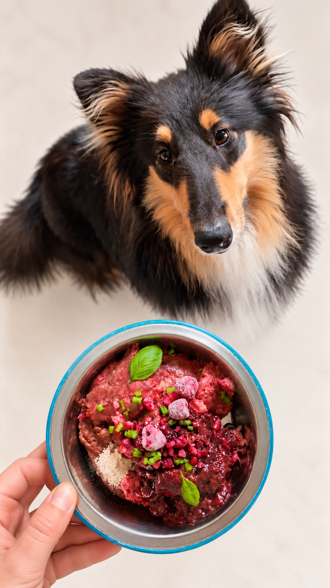
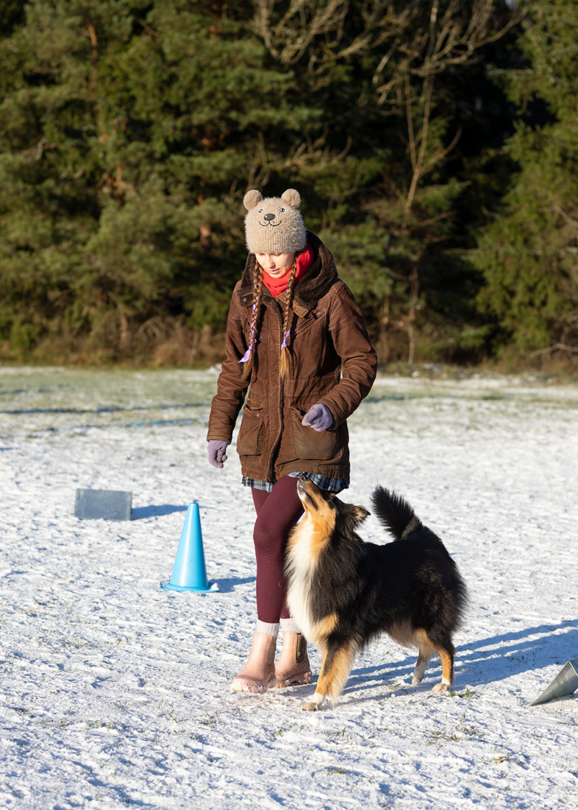

Current diet review
Evaluation of your dog's current food, ingredients, feeding amounts, and overall nutritional suitability.
For dog owners
Practical, science-based guidance tailored to your dog's current diet, lifestyle, preferences, and individual nutritional needs.
Individual guidance
I offer individual nutrition guidance for dog owners who want professional help understanding, reviewing, or improving their dog's diet.
This may be helpful when starting raw or home-cooked feeding, comparing different foods, reviewing an existing diet, or making feeding decisions based on your dog's individual needs.

Nutrition guidance
Evaluation of your dog's current food, ingredients, feeding amounts, and overall nutritional suitability.
Guidance on homemade diets, including ingredient selection, meal composition, and nutritional balance.
Help comparing foods, understanding labels, and choosing suitable options for your dog.
Practical recommendations for feeding amounts, meal planning, and changing to a new food gradually.
You do not need to choose a consultation length in advance. Send me a short description of your dog, their current diet, and your questions. I will review the information and recommend the most suitable consultation option.
Focused consultation
Best suited to one specific question or a focused review of your dog's current feeding.
Full consultation
Recommended for a broader review of your dog's diet, feeding routine, and individual nutritional needs.
If a more detailed individual feeding plan or nutritional calculation is needed, the scope and price will always be agreed in advance.
Practical experience with dogs
My approach to canine nutrition is supported not only by my background in food science, but also by many years of living, training, and competing with my own dogs.
Training in rally obedience, obedience, and dog dancing gives me a practical perspective on how nutrition connects with activity level, body condition, ageing, recovery, and everyday feeding.

Photo: Vivian Ainsalu
Dog nutrition questions
Answers to common questions about feeding amounts, balanced diets, raw and home-cooked food, commercial dog food, food labels, and changing your dog's diet.
The right amount of food depends on your dog's weight, age, life stage, activity level, body condition, and the energy density of the food. Feeding guides are useful starting points, but the final amount should be adjusted according to your dog's individual response over time.
A balanced dog diet should provide appropriate amounts of protein, fat, essential fatty acids, vitamins, and minerals in relation to the dog's energy needs. Even a diet made from high-quality ingredients can have nutritional gaps, so home-prepared diets are best evaluated using nutritional calculations.
Yes, a nutritionally complete home-cooked diet can be prepared for a dog, but the ingredients and their proportions need to be chosen carefully. A well-formulated recipe should take into account your dog's energy needs, preferred ingredients, feeding style, and individual nutritional requirements.
The best dog food is not necessarily the one with the longest ingredient list or the highest meat percentage. Look for a nutritionally appropriate food that your dog digests well, enjoys eating, maintains a healthy body condition on, and that fits both your dog's individual needs and your everyday feeding routine.
How it works
Send me a short description of your dog's age, breed, current diet, activity level, and the main question or concern you would like help with.
I review the information you provide and let you know whether a 30-minute or 60-minute consultation is most suitable. If your case requires more detailed nutritional calculations or an individual feeding plan, I will explain the additional scope and price before any work begins.
During the consultation, we discuss your dog's diet, your questions, practical recommendations, suitable feeding options, and the next steps.
Ready to begin?
Include your dog's age, breed, weight, current diet, and the main reason you are seeking nutrition guidance.
Send a consultation requestInformation and consultations provided through this website do not replace veterinary examination, diagnosis, or medical treatment. Dogs with diagnosed or suspected health conditions should remain under the care of a veterinarian.